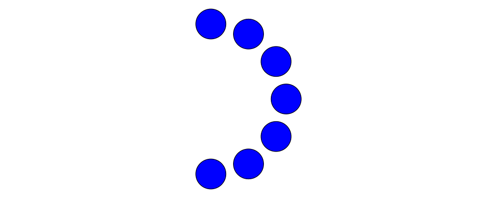
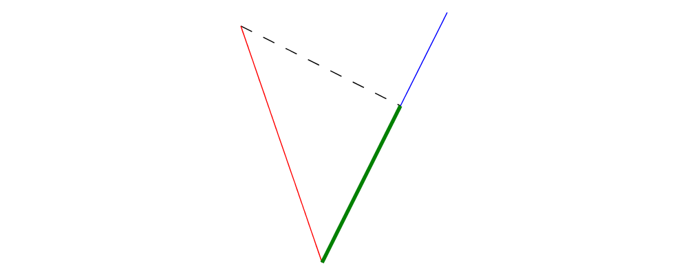
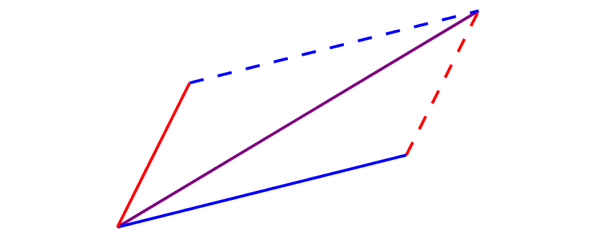
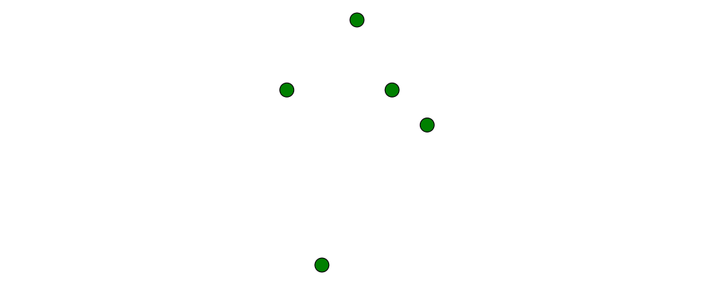
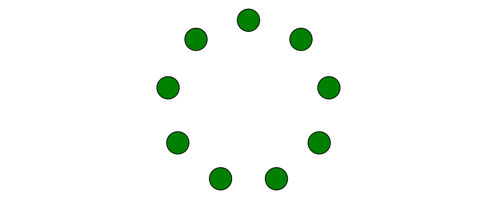
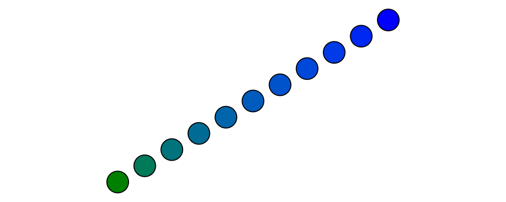

Introduction
After working with diagrams for a while, you very quickly end up
needing to manipulate points and vectors in order to position and
describe your diagrams. For example, fromOffsets and fromVertices
take lists of vectors and lists of points, respectively; beside and
translate each take a vector as an argument; position expects
objects paired with points; and so on.
This tutorial will walk you through everything you need to know about creating and working with vectors and points, with examples and exercises to deepen your understanding. If you notice any typos or bugs, are confused, or have an idea for extending or enhancing this tutorial, please open a ticket!
Solutions to the exercises can be found in the source code for this
tutorial, in the diagrams-doc repository. Note, however, that
many of the exercises have multiple good solutions.
Vectors
Vectors in diagrams are based on the linear package.
In two dimensions, you can think of a vector as a pair of coordinates,
representing displacements in the \(x\) and \(y\)
directions. Alternatively, you can think of a vector as consisting of
a magnitude (length) and a direction (angle).
One of the most
important things to understand about vectors is that they are
translation-invariant: that is, they have no specific location in
space, and are unaffected by translations (though they are affected by
other sorts of transformation such as scaling and rotation). You can
see this for yourself at a ghci prompt:
>>> (3 ^& 6) :: V2 Double
V2 3.0 6.0
>>> translateX 19 (3 ^& 6) :: V2 Double
V2 3.0 6.0
>>> rotateBy (1/4) (3 ^& 6) :: V2 Double
V2 (-6.0) 3.0000000000000004Constructing vectors
Vectors in two dimensions have a type like V2 n, where n is some
numeric type of scalar values (often Double). (One can also work
with other vector spaces with any number of dimensions; in this
tutorial we'll stick to the 2D case.)
The first thing to learn is how to create values of type V2 n.
There are many options:
zerois the zero vector, that is, the vector with zero magnitude (and no direction, or perhaps every direction).zerois rarely useful on its own, but can come in handy e.g. as an argument to a function expecting a vector input.unitXandunitYare the length-one vectors in the positive \(x\) and \(y\) directions, respectively. To create a length-\(l\) vector you can apply scaling tounitXorunitY, likeunitX # scale 3or3 *^ unitX(see Vector operations).Also,
unit_Xandunit_Yare likeunitXandunitYbut point in the corresponding negative directions.> example = fromOffsets [unitX, unitY, 2 *^ unit_X, unit_Y] # centerXYTo create a vector with given \(x\)- and \(y\)- components, you can use the function
r2 :: (n, n) -> V2 n:> example = fromOffsets . map r2 $ [(1,1), (0,3), (-2,1), (-1,-4)]As you can see,
r2is especially useful if you already have pairs representing vector components (which is not uncommon if the components are coming from some other data source).You can also use the data constructor
V2:> example = fromOffsets [V2 1 1, V2 0 3, V2 (-2) 1, V2 (-1) (-4)]You can also use
(^&)to construct vector literals, like so:
> example = fromOffsets [1 ^& 1, 0 ^& 3, (-2) ^& 1, (-1) ^& (-4)]This can make for convenient and pleasant notation. However, it does have some drawbacks, namely:
(^&)is extremely general so its type is unhelpful.Related to the above, literal vector expressions like
1 ^& 2must be used in a context where the type can be inferred (or else a type annotation must be added). This is because (as we will see later)(^&)can also be used to construct points as well as higher-dimensional vectors.
Only you can decide whether the tradeoffs are worth it in a given situation.
You can construct vectors from
Directions using thefromDirectionfunction.fromDirectiontakes aDirectionand constructs a unit (i.e. magnitude 1) vector pointing in the given direction.One final way to construct vectors is using the function
e. By definition,e a == unitX # rotate a, but sometimes callingecan be more convenient. The nameeis a sort of pun: in the same way that a complex number with magnitude \(r\) and angle \(\theta\) can be constructed as \(r e^{i\theta}\), a vector with given magnitude and direction can be constructed asr *^ e theta. (Note thateis not exported fromDiagrams.Prelude; if you wish to use it you must import it fromDiagrams.TwoD.Vector.)> import Diagrams.TwoD.Vector > > example = lwG 0.05 . mconcat . map fromOffsets > $ [ [r *^ e (r @@ rad)] > | r <- [33 * tau/32, 34 * tau/32 .. 2 * tau] > ]
Construct each of the following images.
The circles have radius 1, and are arranged in the shape of a radius-5 semicircle.
30 spokes with lengths 1, 2, and 3.
Destructing vectors
To take apart a vector into its \(x\) and \(y\) components,
use unr2 :: V2 n -> (n, n), or more generally you can use
coords (from Diagrams.Coordinates) and pattern-match on
(:&). Both these methods work well in conjunction with the
ViewPatterns GHC extension, as in
> foo :: V2 n -> ...
> foo (unr2 -> (x,y)) = ... x ... y ...Note, however, that you will probably need this less often than you think. Using the vector operations presented in the next section, you should strive to work on the level of vectors, and only "stoop" to the level of working with explicit coordinates when absolutely necessary.
To get the magnitude and direction of a vector, you can use the
norm and direction functions. To get the angle between two
given vectors, use angleBetween. Additionally, quadrance gives
the squared magnitude of a vector, and is more efficient than
squaring the result of norm, since it avoids a call to sqrt.
For example, if you want to test which of two vectors is longer, you
can compare the results of quadrance instead of norm (since
\(a < b \iff a^2 < b^2\) as long as \(a\) and \(b\) are
nonnegative).
Vector operations
There is a rich set of combinators for operating on vectors (and we are open to adding more!).
Vectors can be transformed with all the usual transformation functions like
rotate,scale, and so on. However, recall that although it is possible to applytranslateto a vector, it has no effect.> example = mconcat $ map fromOffsets (map (:[]) vs) > where > vs = take 33 . iterate (scale (2**(1/32)) . rotateBy (1/32)) > $ unitXV2is an instance of theAdditiveclass (seeLinear.Additivefrom thelinearpackage). This means:Vectors can be added with
(^+^). To add two vectors, think of placing them head-to-tail; the result of the addition is the vector from the tail of the first vector to the head of the second.There is a zero vector
zero(mentioned previously), which is the identity for(^+^).Vectors can be negated with
negated. The negation of a vectorvis the vector with the same magnitude which points in the opposite direction, and is the additive inverse ofv: that is,v ^+^ negated v == zero.
Linear.Additivealso defines a few other methods which can be used on vectors, including(^-^)(vector subtraction) andsumV(summing an entire list or otherFoldablecontainer of vectors).V2is also an instance of theFunctorclass (seeData.Functorfrom thebase). The(*^)operator uses this class to multiply all components of a vector by a scalar. In particular forNum n => V2 nwe have(*^) :: n -> V2 n -> V2 n. (Note thatlinearoperators always use^in their names to indicate a vector argument, as in(*^)(scalar times vector) and(^+^)(vector plus vector) and(.+^)(point plus vector, as we will see later.)Using
(*^)is equivalent to usingscale; that is,s *^ v == v # scale s. There is also a(^/)operator provided for convenience which divides a vector by a scalar; of coursev ^/ s == v ^* (1/s).Finally,
R2is an instance of theMetricclass (also inlinear), which provides the inner product (also called dot product) function,dot. The definition and properties of the dot product are beyond the scope of this tutorial; you can read about it on Wikipedia. However, note that several common uses of the dot product are already encapsulated in other functions, such asprojectandleftTurn.
The
signormfunction changes the magnitude of a vector to \(1\), while keeping the direction fixed.perpyields a vector perpendicular to (and of the same magnitude as) its input.lerplinearly interpolates between two vectors as the given parameter varies from \(0\) to \(1\).leftTurn v1 v2tests whether the direction ofv2is a "left turn" fromv1(that is, if the direction ofv2can be obtained from that ofv1by rotating up to one-half turn in the positive direction).project u vcomputes the projection ofvontou. In the illustration below, the green line shows the projection of the red vector onto the blue vector.> u = r2 (1,2) > v = 2 *^ (unitY # rotateBy (1/19)) > p = project u v > > drawV v = fromOffsets [v] > > example = mconcat > [ drawV p # lc green # lwG 0.03 > , drawV u # lc blue > , drawV v # lc red > , drawV (p ^-^ v) # translate v # dashingG [0.1,0.1] 0 > ]
Write a function
vTriangle :: V2 Double -> V2 Double -> Diagram Bwhich takes as arguments two vectors representing two sides of a triangle and draws the corresponding triangle. For example,vTriangle unitX (unitX # rotateBy (1/8))should produceWrite a function which takes two vectors as input and constructs a classic illustration of vector addition using a parallelogram, as in the following example:

Using vectors
Once you have a vector, what can you do with it? A few of the things have already been seen in the examples above, but it's worth collecting a list here in one place.
You can create a trail, path, or diagram (in fact, any
TrailLikething—see the trails and paths tutorial) from a list of vectors usingfromOffsets.You can translate things by a vector using
translateormoveOriginBy.As explained in the next section, you can add a vector to a point to yield another point.
Points
A point is a location in space. In diagrams, points are based
on the Point wrapper from the linear package, and in the case
of 2D are represented by the type alias P2 = Point V2. In 2D, points
are usually thought of as a pair of \(x\) and \(y\)
coordinates (though other coordinate systems could be used as well,
e.g. polar coordinates).
Points and vectors are closely related, and are sometimes conflated
since both can be concretely represented by tuples of coordinates.
However, they are distinct concepts which support different sets of
operations. For example, points are affected by translation whereas
vectors are not; two vectors can be added but two points cannot; and
so on. Hence, they are represented by distinct types in diagrams.
Constructing points
There are several ways to construct points.
originis the name of the distinguished point at the origin of the vector space (note this works in any dimension).To create a point with given \(x\)- and \(y\)- components, you can use the function
p2 :: (n,n) -> Point V2 n:> example > = flip atPoints (repeat (circle 0.2 # fc green)) > $ map p2 $ [(1,1), (0,3), (-2,1), (-1,-4), (2,0)]As with
r2,p2is especially useful if you already have pairs representing point coordinates.The
^&operator can be used to construct literal points (P2 nvalues) as well as vectors (V2 nvalues). The proper type is chosen via type inference: if the expression(3 ^& 5)is used in a context where its type is inferred to beP2 n, it is the point at \((3,5)\); if its type is inferred to beV2 n, it is the vector with \(x\)-component \(3\) and \(y\)-component \(5\).There is no way to directly convert a vector into a point (unless you use the
Ptype constructor fromLinear.Affine)—this is intentional! If you have a vectorvand you want to refer to the point located at the vector's head (when the vector tail is placed at, say, the origin) you can writeorigin .+^ v(see below for a discussion of.+^).An advanced method of generating points is to use any function returning a
TrailLikeresult, since[Point V2 Double]is an instace ofTrailLike. Using a function returning anyTrailLikeat the result type[Point V2 Double]will result in the list of vertices of the trail. For example, here we obtain the list of vertices of a regular nonagon:> pts :: [P2 Double] > pts = nonagon 1 > example = atPoints pts (repeat $ circle 0.2 # fc green)Note that we could also inline
ptsin the above example to obtain> example = atPoints (nonagon 1) (repeat $ circle 0.2 # fc green)In this case, the type of
nonagon 1would be inferred as[P2 Double](sinceatPointsexpects a list of points), causing the appropriateTrailLikeinstance to be chosen.
Destructing points
For taking a point apart into its components:
You can use the
unp2function, or, more generally,coords(just as with vectors) to get the Cartesian coordinates of a point.You can also use the
_xand_ylenses to extract (or update) the \(x\)- and \(y\)-coordinates of a point: for example,pt ^. _xgets the \(x\)-coordinate ofpt, andpt & _x +~ 2adds2to the \(x\)-coordinate.
You can compute the distance between two points with the distance
function (or qd to get the square ("quadrance") of the distance,
which avoids a square root).
Construct each of the following images.
A \(31 \times 31\) grid of circles, each colored according to the distance of its center from the origin.
Polar coordinates
Instead of being represented using \(x\)- and \(y\)-coordinates, points can also be represented using polar coordinates (usually referred to as \((r, \theta)\)).
You can use the
_rlens to refer to the magnitude (\(r\)-coordinate) of a point.You can use the
_thetalens to refer to the \(\theta\)-coordinate of a point, that is, the angle to the point as measured counterclockwise from the positive \(x\)-axis.
Point operations
You can transform points arbitrarily: unlike vectors, points are affected by translation. Rotation and scaling act on points with respect to the origin (for example, scaling the point \((1,1)\) by \(2\) results in the point \((2,2)\)).
> sqPts = square 1
>
> drawPts pts c = pts # map (\p -> (p,dot' c)) # position
> dot' c = circle 0.2 # fc c
>
> example = drawPts sqPts blue
> <> drawPts (sqPts # scale 2 # rotateBy(1/10) # translateX 0.2) redAbstractly, points and vectors together form what is termed an "affine space". Here is a nice intuitive description of affine spaces, stolen from the wikipedia page:
An affine space is what is left of a vector space after you've forgotten which point is the origin (or, in the words of the French mathematician Marcel Berger, "An affine space is nothing more than a vector space whose origin we try to forget about, by adding translations to the linear maps").
It's not important to understand the formal mathematical definition of an affine space; it's enough to understand the sorts of operations which this enables on points and vectors.
In particular, P2 is an instance of the Affine type class
(defined in Linear.Affine from the linear package).
This class also has an associated type family called Diff, which for
P2 is defined to be V2: roughly, this says that the difference
or "offset" between two points is given by a vector.
Note how the operators below are named: a period indicates a point
argument, and a carat (^) indicates a vector argument. So, for
example, (.+^) takes a point as its first argument and a vector as
its second.
You can "subtract" one point from another to get the vector between them, using
(.-.). In particularb .-. ais the vector pointing fromatob.Using
(.+^), you can add a vector to a point, resulting in another point which is offset from the first point by the given vector. Ifp .+^ v == p', thenp' .-. p == v. You can also use(.-^)to subtract a vector from a point.Although it is not semanticly correct,
Pointis an instance ofAdditive(this may be fixed in a later release). This means you can linearly interpolate between two points usinglerp, which does make sense. For example, to find the point which is 25% of the way from the first point to the second.> pt1, pt2 :: P2 Double > pt1 = origin > pt2 = p2 (5,3) > > example = position $ > [ (p, circle 0.2 # fc (colourConvert c)) > | a <- [0, 0.1 .. 1] > , let p = lerp a pt2 pt1 > , let c = blend a blue green > ]You can find the centroid (the "average" or "center of mass") of a list of points using the
centroidfunction (defined inDiagrams.Points).Finally, you can scale a point using the
(*^)operator (though, as mentioned earlier, you can also usescale).
Implement the Graham scan algorithm and generate diagrams illustrating the intermediate steps.
Using points
Here are some things you can do with points, once you have constructed or computed them:
You can create a straight line between two points with
(~~).You can construct any
TrailLikeinstance (like trails, paths, or diagrams) from a list of points usingfromVertices.You can translate objects to a given point using
moveTo,place, ormoveOriginTo.You can position an entire collection of objects using
position.